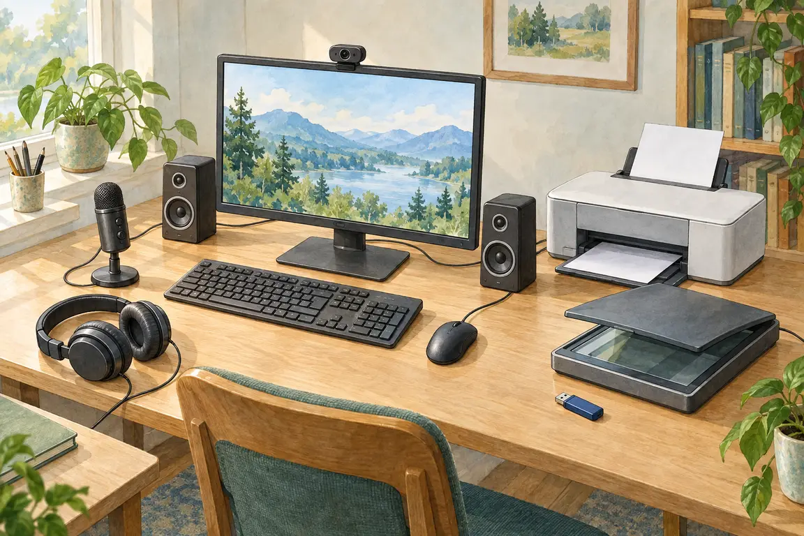
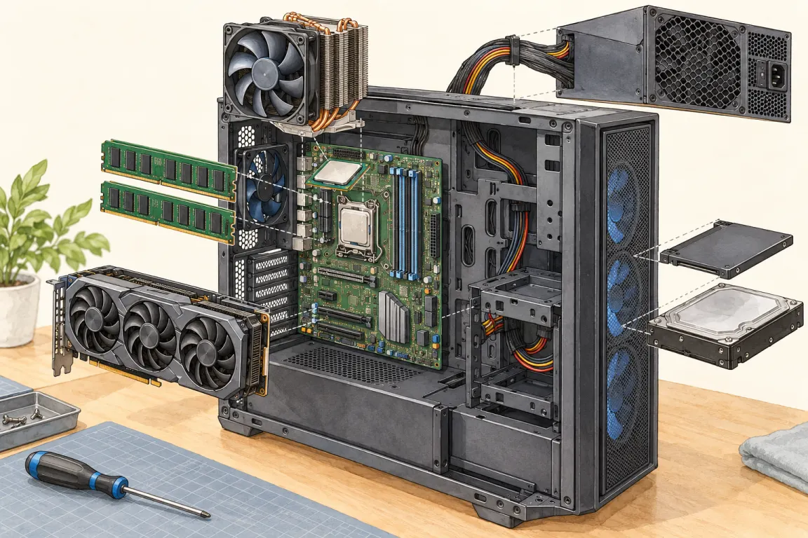

Vstupní zařízení
Posílají data do počítače: klávesnice, myš, mikrofon, webkamera, skener.
Pro 4.–5. ročník: části počítače, vstupní a výstupní zařízení, hesla a bezpečnost.
K počítači připojujeme různá zařízení. U každého se zeptej: jdou tudy data do počítače, nebo ven z něj? Podle toho poznáš, jestli je to vstupní, nebo výstupní zařízení.
Posílají data do počítače: klávesnice, myš, mikrofon, webkamera, skener.
Ukazují data z počítače: monitor, tiskárna, reproduktor, sluchátka.
Procesor počítá a řídí, operační paměť drží to, s čím se právě pracuje, disk uchová soubory i po vypnutí. Nejsou to vstupy ani výstupy.
Je dlouhé, míchá velká a malá písmena, číslice a znaky. Nesmí v něm být tvoje jméno, rok narození ani obyčejné slovo.
Pozor na záměnu: skener a tiskárna vypadají podobně, ale skener papír čte do počítače (vstup), tiskárna na papír tiskne (výstup). Heslo nikomu neprozrazuj – ani kamarádovi, ani za odměnu ve hře. Když tě něco na internetu vyleká nebo nevíš, co dělat, řekni to dospělému.
Lucie si chce dát heslo Lucie2014. Je to bezpečné heslo?
Heslo Lucie2014 je slabé – obsahuje jméno a rok, které o Lucii kdekdo ví.

Klepni na některý bod.

Klepni na součást uvnitř skříně.
Vstupní zařízení dávají data do počítače (klávesnice, myš, mikrofon). Výstupní zařízení data z počítače ukazují (monitor, tiskárna, reproduktor).